Sailfish: A Framework For Large Scale Data Processing
Jan 14 2013
Data Intensive Computing
- Parallel Dataflow Framework
(e.g Map-Reduce, Pig, Hive)
- Parallel Database Management System
Map Reduce
Distributed File System
Performance ?
-
MapReduce: A major step backwards. David J. DeWitt (blog post)
- MapReduce is a step backwards in database access
- MapReduce is a poor implementation
- MapReduce is not novel
- MapReduce is missing features
- MapReduce is incompatible with the DBMS tools
- A Comparison of Approaches to Large-Scale Data Analysis. Andrew Pavlo, et al. (SIGMOD'09)
- Parallel DBMS provides high-level programming environment for data processing at scale
- Structured data (schema)
- Commercial DBMS better performance than Hadoop
- MapReduce: A Flexible Data Processing Tool. Jefferey Dean (Google), et al. (CACM Jan 2010)
- Storage-system independent
- Complicated transformations supported
(esp. for unstructured data)
- Limits of current implementation (esp. for Hadoop)
- Apache Hadoop: Best Practices and Anti-Patterns. Arun C Murthy (Yahoo!) (blog post)
- Coalesce processing of multiple small input files into smaller number of maps and use larger HDFS block-sizes for processing very large data-sets
- Ensure maps are sized so that all of map-outputs can be sorted in one pass by keeping all of them in the sort-buffer
- ...
- Starfish: A Self-tunning System for Big Data Analytics. Herototos Herodotou, et al. (CIDR'11)
- Structured Data
- Programming Language
- Fault Tolerance
- Performance

- HadoopDB (Azza Abouzeid et al. VLDB 2009)
- multiple single-node DBMS
- Hadoop job coordinator, network communication layer
- Hadoop++ (Jens Dittrich et al. VLDB 2010)
- Intermediate data handling inefficiency
- Tuning complexity
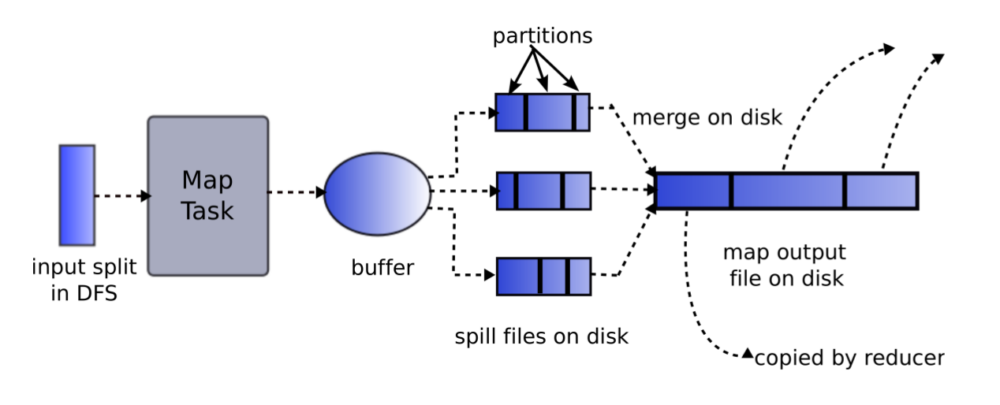
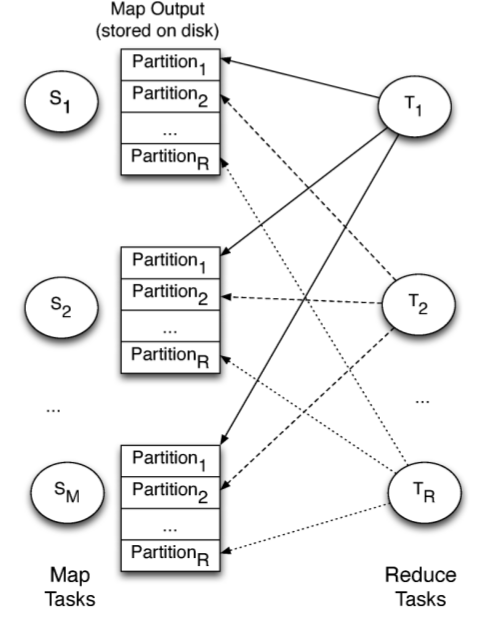
- #distince_retrievals (pulls) = M * R = #disk_seeks
- data_per_retrieval = file_size / R
where M = #map_tasks, R = #reduce_tasks
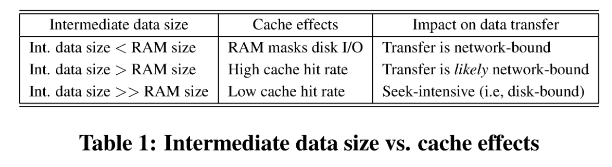
Blocking step
Disk storage
Blocking step is popular in parallel dataflow models.
- Goal: Minimize #disk_seeks
- Approach: Baching data I/O
- Why:
- (O(M*R)→O(R))
- Addressing Skew
| #disk_seeks = M*R | #disk_seeks = R |
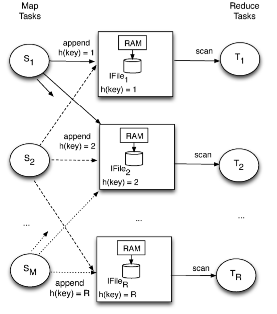 |
|
| Map-Reduce | Sailfish |
WHY?
- create_file(filename)
- record_append(fd, <key, value>)
- scan(fd, buffer, lower_key, upper_key)
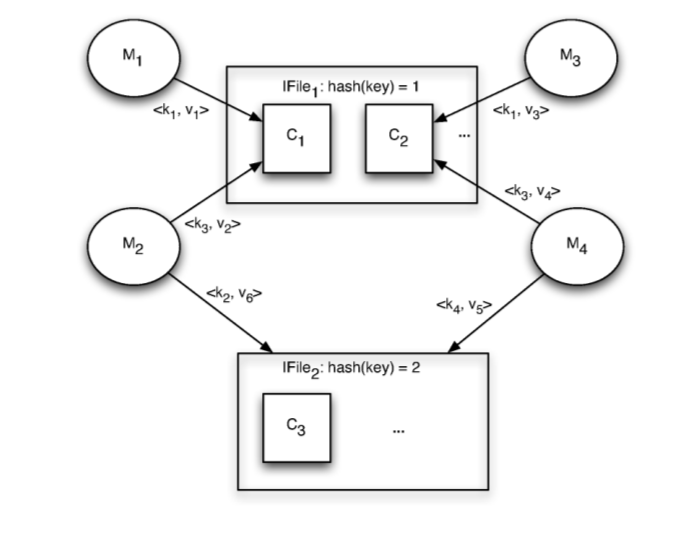
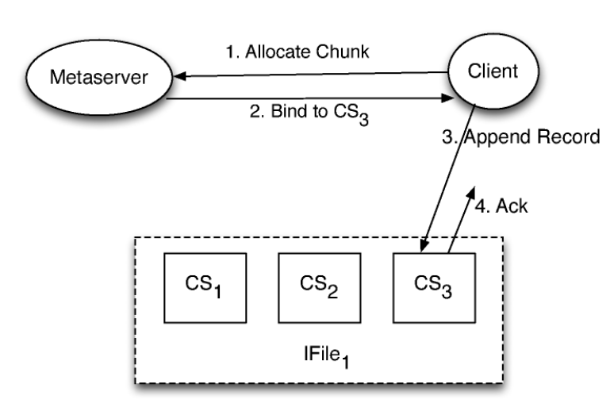
| Problem | Solution |
|---|---|
blocking "straggeler" |
decouple sorting from map tasks→ finer granularity of sorting unit |
<partition, key, value>
stream
buffer the records
flush records to the chunkserver
commits
record_append()
invokes
loads
a chunk
writes
back
determines #reducers
informs Hadoop JobTracker
obtains work assignment
(chunks in I-file)
pulls records
scan()
merges chunks
filter
<key, value>
streams
- Map
3 * #ifiles * #chunks_in_ifile
- Reduce
∝ #chunks_in_ifle * #reducers
(depends on data volumn rather than #mappers)
Reduce #chunks_in_ifile!
(note: chunk size <= maximum chunk size in KFS)
- #chunks_in_ifile vs. appending parallelism
- fault tolerance vs. aggregation size (performance)
- more?
- Cluster Setup
- Synthetic Benchmark
- Real Job Mix
- #machines = 150 = 5 * 30
- 2 quad-core Intel Xeon E5420, 16GB RAM, 4*750GB drives
- 1GB network interface / cable
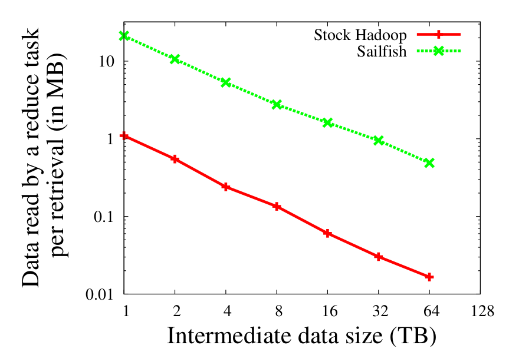
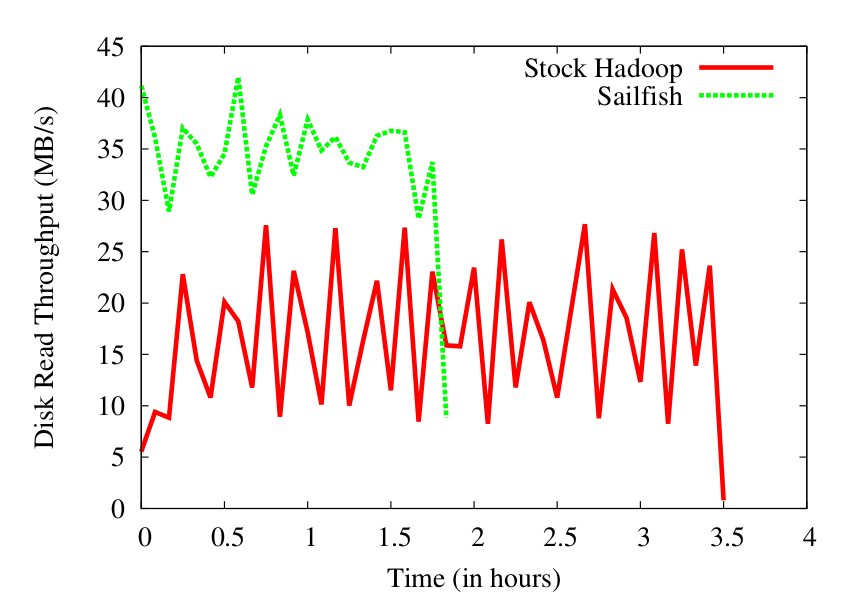
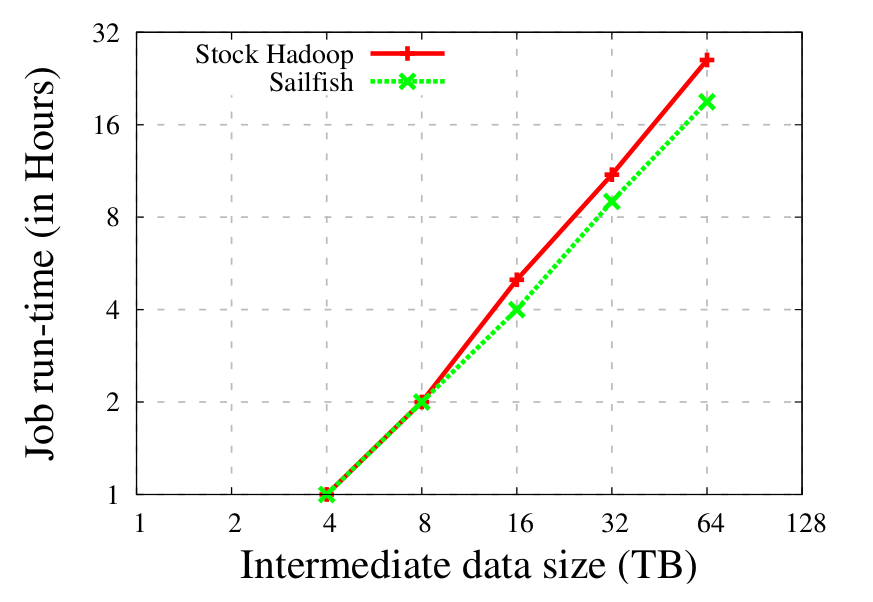
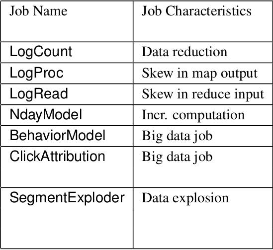
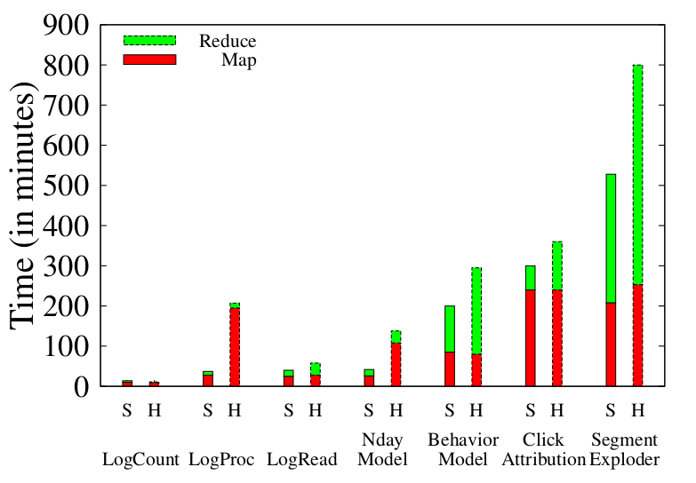
- Using I-files for aggregation
- Decoupling sorting from map task execution
- Making reduce phase dynamic
E (# of recomputing map tasks) is:
| Hadoop | #tasks_per_node ⁄ #drives_per_node |
|---|---|
| Sailfish | #tasks_per_rack ⁄ #drives_per_node |
- TODO